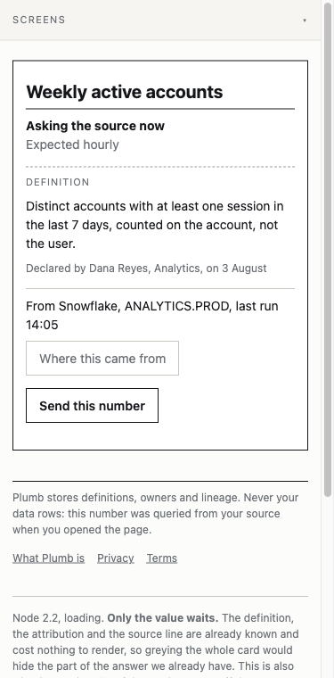
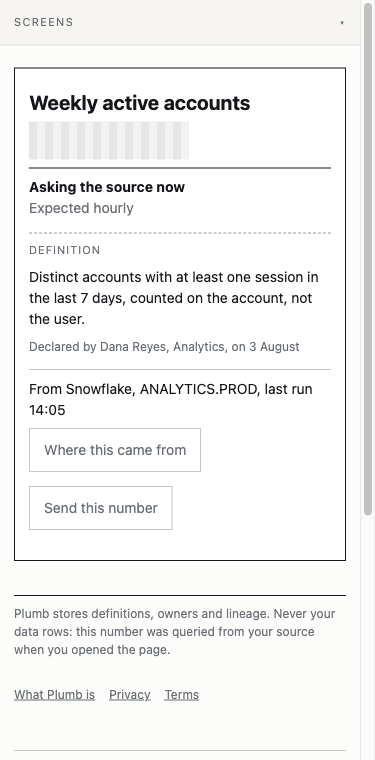
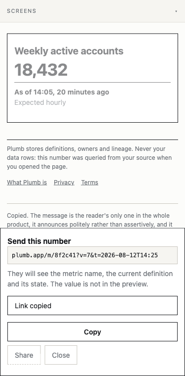
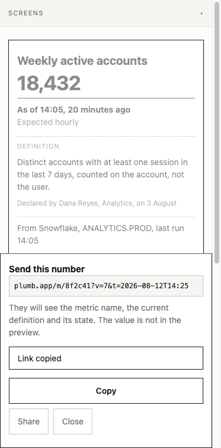
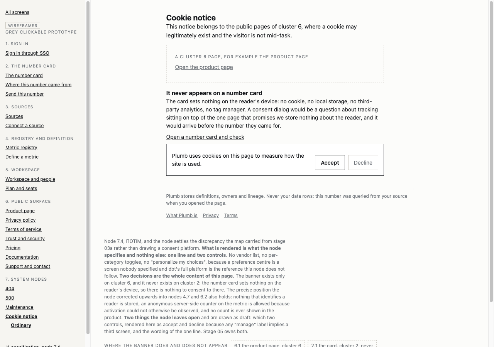
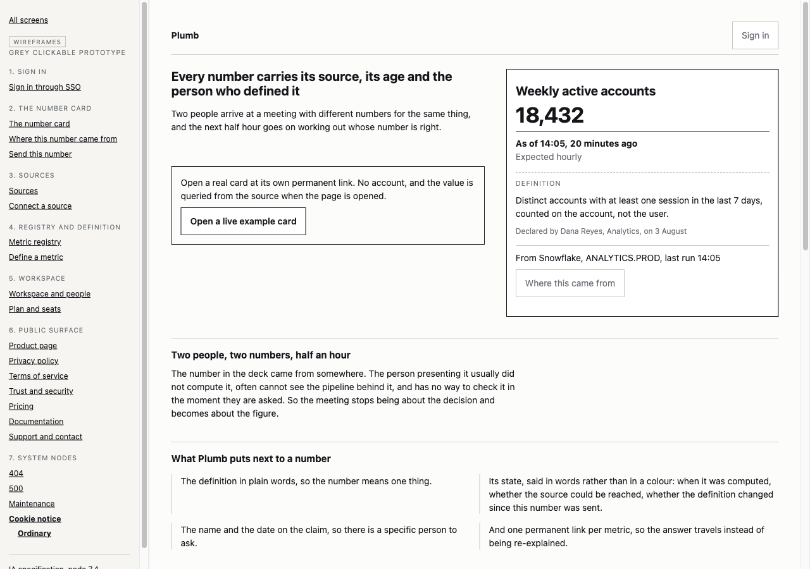

Plumb · Stage 04 · Wireframes
All screens, and how much of the map they cover
The hub of the grey prototype. The registry behind it was filled in before the first screen was drawn, so this page answers two different questions at once: what is built, and what has to exist at all. Screens are clickable the moment they exist; everything else stands here as specification with a dashed border.
wireframes/_nav.js
Entries by flow
The four flows are ia/docs/flows.md and nothing here reorders them. Flow 1 is assembled first because it is the flow the reference screen lives in and the one that closes the job this product exists for. A screen with no link under it is specified and not yet drawn.
Flows 2 and 3 walk the same card as flow 1 and add no screen of their own. That is not an omission in the drawing: both jobs close on the card, one on the attribution line and one on the state that compares the definition against the moment the link carries.
Coverage map
Every screen of the product, grouped by the IA cluster it belongs to. A solid border means the screen exists and clicks, with the number of pages it carries, states included. A dashed border means it exists only as an IA specification.
ia/docs/sitemap.md, never re-derived here
The four entries in cluster 0 are global components rather than screens. They have no pages of their own: the footer and the feedback message are rendered inside the screens that use them, and the state vocabulary is a list of words the states quote. They are in the map so that nobody has to remember they exist.
State matrix
The coverage map answers what is built. This answers what has to exist at all, and it is the table stage 05 step 4 reads for the tone of each state and stage 07 step 2 reads as the complete list of states in the product. The four system states are the floor, not the set: the real set comes from the States section of each IA node.
| Screen | Scope | Loading | Ordinary | Empty | Error | Reader | Analyst | Domain | Transitional |
|---|---|---|---|---|---|---|---|---|---|
| 2.1 The number card | MVP | ✓ 2.2 | ✓ 2.3 | ✓ 2.6 | - 1 | ✓ | ✓ | ✓ 2.4, 2.5, 2.10, and two combinations | - 2 |
| 2.7 Where this number came from | MVP | - 3 | ✓ open | - 4 | - 1 | ✓ | ✓ 5 | ✓ source down, bare URL, restricted | ✓ opens and closes |
| 2.8 Send this number | MVP | - 6 | ✓ copied | - 7 | - 8 | ✓ | ✓ 5 | ✓ sending a card that is down | ✓ opens and closes |
| # | Reason |
|---|---|
| 1 | There is no error state on either node, and it is a decision rather than a gap. Design principle 2: doubt is a state, not an error and not an incident. Everything that would be an error page elsewhere is a named domain state here, in the wording fixed at node 0.4. |
| 2 | The card has no transitional state of its own. Opening the source layer and opening the send dialog are transitions into the other two screens, and they are counted there. |
| 3 | Node 2.7 states it directly: loading is not a state here. The six rows are metadata we already hold. Only the value is ever queried at read time. |
| 4 | The six rows are always present when the section can open at all. |
| 5 | The analyst sees the same screen. A separate analyst view of the same number is how two people end up with two different numbers, which is the reconciliation this product exists to remove. The one difference, edit definition, sits on the card. |
| 6 | The link exists before the dialog opens, so there is nothing to wait for. |
| 7 | There is always a link to show. |
| 8 | Settled at node 2.8 and recorded at node 0.3: the reader never needs a failure toast. Their only action is copying, and the link is on screen and selectable, so the fallback is already visible. |
Two pages are deferred rather than forgotten: 2.9, not readable without an account, which the IA audit moved to ПОТІМ because restriction is a workspace policy and cluster 5 is deferred; and the restricted variant of 2.7, which has the same trigger and no scope label of its own. The second is a discrepancy to repair in the IA, and it is named here rather than fixed quietly. Full inventory in wireframes/docs/screens.md.
Conventions
The contract every screen and every subagent works to, from wireframes/docs/conventions.md. It is here rather than only in the file because the critique at step 9 checks the screens against it, and at that moment it should be in front of the eye.
The greys, inherited from the IA mockups
Seven greys and nothing else. There is no accent and no semantic colour in a wireframe: a state is told apart by its words and its position, never by hue. If a state can only be recognised once it is coloured, it is not designed yet.
| Rule | What it forbids |
|---|---|
| A live screen, not a schema | Two frames labelled desktop and mobile on one page, annotations on zones, skeleton placeholders standing in for a screen. The phone view is checked by narrowing the browser |
| Nothing is invented here | A block, page or state appearing for the first time in a wireframe. Repair the IA upwards, then render. Button and field wording is the one exception: draft here, owned by stage 05 |
| Every state is its own page, with a way out | A state drawn as a variant inside another page, and a state with no exit. One recorded exception: 2.10 is a partial close, and the reader's dead end when the owner may not be shown is a price the IA named |
| At most one primary action, and the card has none | Inventing a call to action for the card. The primary act there is reading and it is complete on arrival. The rule is a ceiling, not a quota |
| Inline CSS is transport, not a home | A token value written inline, and a rule repeated on two screens staying inline. Every inline block carries a marker so the reconcile pass finds it by grep |
| One canonical data set | A screen inventing its own numbers. Weekly active accounts, 18,432, as of 14:05, declared by Dana Reyes on 3 August, from Snowflake ANALYTICS.PROD |
Was → became
Step 9, in five instruments, because they have different radii. Codex read the source and found nothing at 360, three browser auditors found four defects there, and a grep settled the one class both models could have guessed wrong. Thirty findings stood after verification in the current file, six were withdrawn with their reason kept, and three turned out to be holes in the IA that may only be repaired upwards. Every line is in wireframes/docs/critique.md; this is the half-minute version.
| Class | Found | Who found it | Fixed | Withdrawn | Left to the IA |
|---|---|---|---|---|---|
| Breaks at 360 | 4 | Browser auditors. Codex could not see this class at all | 4 | 0 | 0 |
| Zone with no role or no next action | 19 | Browser auditors | 17 | 1 | 2 |
| Schema instead of a screen | 2 | Browser auditors | 2 | 0 | 0 |
| Appearance leaked, placeholders, dead ends, screens off the map, navigation | 3 | Codex | 1 | 4 | 0 |
| Appearance living inline | 2 | Codex, and my own grep independently | 2 | 1 | 0 |
| Canonical data out of sync | 1 | Browser auditor | 1 | 0 | 0 |
| Duplicate rule on two or more screens | 0 | Codex and my grep, counted separately | n/a | 0 | 0 |
The two instruments disagreed once and it was not a contradiction. Codex reported the 360 class clean because it reads files, and the class only exists once a browser computes a style. That is the clearest argument in this stage for choosing radii rather than opinions.
Three pairs, and the first one is why this step exists

.wf-skeleton set height and width on an inline span, so both were ignored: the value slot was 0px tall, the placeholder invisible, and every block below sat 44px higher than on the resolved card. A grep saw the rule and was satisfied.



